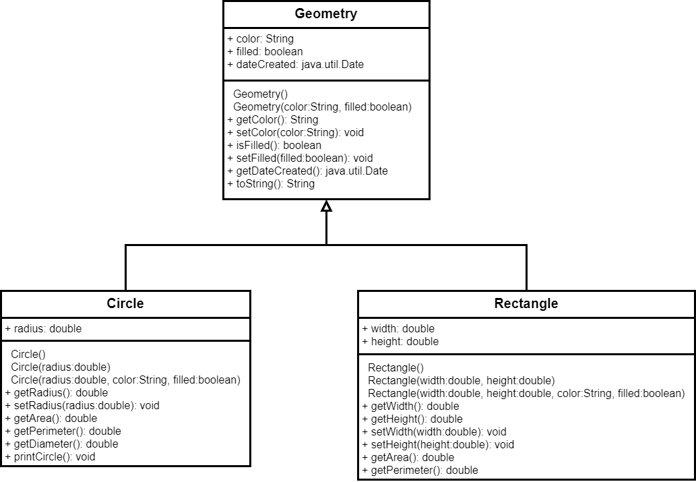
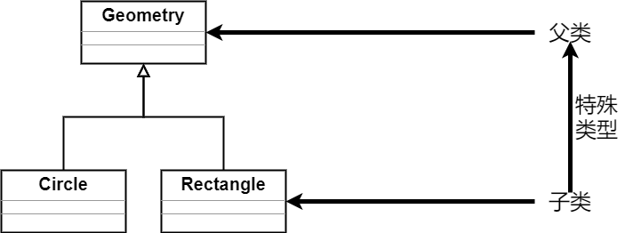

Java程序设计
第四章 面向对象基础(二)
父类和子类
父类和子类的关系
- 子类不是父类的子集，往往含有比父类更多的信息
- 子类不能直接访问父类的私有数据域
- 不是所有的“is-a"关系都能用继承关系进行建模，如”正方形与长方形“的关系
- 不要为了重用方法，滥用”is-a"关系，比如“树和人”
- Java中只有单一继承，没有多继承
Object类
Object类是所有类的直接或间接父类
主要的Object类方法包括:
- public final Class getClass() 获取当前对象所属的类信息，返回class对象
- public String toString() 按字符串对象返回当前对象本身有关的信息
- public boolean equals(Object obj) 比较两个对象是否是同一对象
- protected Object clone() 生成当前对象的一个副本，并返回该对象副本
- public int hashCode() 返回该对象的哈希代码值
- protected void finalize() throws Throwable 定义回收当前对象时所需要完成的资源释放工作
Super关键字
super关键字用于指代父类
- 子类继承的是具有访问权限的数据域和方法
- 构造方法不能继承
- 可利用super调用父类构造方法
- 可利用super调用父类方法
Super关键字
- 可通过super()或super(par)调用父类构造方法
- 若显式调用super()或super(par)，则该语句必须为子类构造方法的第一句
- 子类构造方法若没有重载父类的构造方法，或采用super显式调用父类的构造方法，编译器将自动在每个构造方法中在第一句位置加入super()语句
构造方法的调用
构造方法的调用会沿着继承的关系找到所有的父类构造方法

super的说明
- 类需要被继承和扩展的话，需要提供无参构造方法
- 可利用super调用父类的方法，如super.method(par)
访问权限修饰符
- public 可被任意其它对象访问
- private 只能被类本身访问，在类外不可访问
- protected 只能被同一包内及其子类的实例对象访问
- 默认(friendly) 可被类所在包内的各类访问
访问权限修饰符
| 类型 | 无修饰符 | public | private | protected |
|---|---|---|---|---|
| 同一类 | 是 | 是 | 是 | 是 |
| 同一包中的子类 | 是 | 是 | 否 | 是 |
| 同一包中的非子类 | 是 | 是 | 否 | 是 |
| 不同包中的子类 | 否 | 是 | 否 | 是 |
| 不同包中的非子类 | 否 | 是 | 否 | 否 |
访问权限修饰符
| o.x | Y | Y |
|---|---|---|
| o.y | Y | N |
| o.z | N | N |
| o.m1 | Y | Y |
| o.m2 | Y | N |
| o.m3 | N | N |
访问权限修饰符

| C1 | Y | N |
|---|---|---|
| C2 | Y | Y |
访问权限修饰符
public class Foo{
private boolean c;
public static void main(String[] args){
Foo foo=new Foo();
System.out.println(foo.x);
System.out.println(foo.convert());
}
private int convert(){
return x?1:-1;
}
}
public class Test{
public static void main(String[] args){
Foo foo=new Foo();
System.out.println(foo.x);
System.out.println(foo.convert());
}
}
方法重写
- 方法重写，指的是若子类不需要使用从父类继承的方法功能时，可以定义自己的方法
- 子类的方法具有和父类方法相同的参数，相同的返回类型
- 只可重写子类具有访问权限的方法，方法的访问范围不能比原方法小
- 不可重写super.super.toString()方法
- 不可重写父类的private方法
- 不可重写父类的静态方法
方法重载
- 方法重载，指的是具有相同的方法名，不同的方法参数，不同的方法返回类型的方法
- 可以在同一个类中有多个重载的成员方法
- 注意重载与重写的区别
方法重写和重载
重写
public class Test{
public static void main(String[] args){
A a=new A();
a.p(10);
a.p(10.0);
}
}
class B{
public void p(double i){
System.out.println(i*2);
}
}
class A extends B{
public void p(double i){
System.out.println(i);
}
}
重载
public class Test{
public static void main(String[] args){
A a=new A();
a.p(10);
a.p(10.0);
}
}
class B{
public void p(double i){
System.out.println(i*2);
}
}
class A extends B{
public void p(int i){
System.out.println(i);
}
}
多态性
在将父类对象作为参数的方法中，可将子类对象作为参数进行传递 PolymorphismDemo.java
动态绑定

- $C_n$为Object类，$C_1$为最特殊的类，obj为$C_1$的一个实例
- obj.p()方法实现时，虚拟机在$C_1$,$C_2$,$\cdots$,$C_k$,$\cdots$,$C_{n-1}$,$C_n$中查找p的实现，一旦找到就停止查找并调用该实现
- DynamicBindingDemo.java
- 注意区分方法的匹配和绑定实现，匹配发生在编译时，而绑定是在运行时动态进行
对象类型转换

隐式转换，Student类的实例对象自动成为Object类的实例对象
Object o=new Student();
Student s=o;
$\times$
Object o=new Student();
Student s=(Student)o;
$\checkmark$
显式转换，将父类对象实例转换为子类对象实例时，必须使用显式转换
对象类型转换(2)
instanceof运算符，用于检测某个对象是否是一个类的实例
Object myObject=new Circle();
//...
if(myObject instanceof Circle){
System.out.println("The circle diameter is "+
((Circle)myObject).getDiameter());
}
对象相等判断
- equals方法，用于比较两个对象的内容，可重写
- ==用于比较两个基本数据类型的变量值是否相等，或者两个引用变量的地址是否相等，即指向同一对象
object1.equals(object2);
public boolean equals(Object obj){
return this==obj;
}
关于final
- final可用于修饰类、类的成员、局部变量
- final类不可被继承
- final变量是一个常量
- 父类中的final方法不可被子类重写
public final class FC{
//......
}
final static double PI=3.14159265;
public class Test{
public final void m(){
//......
}
}